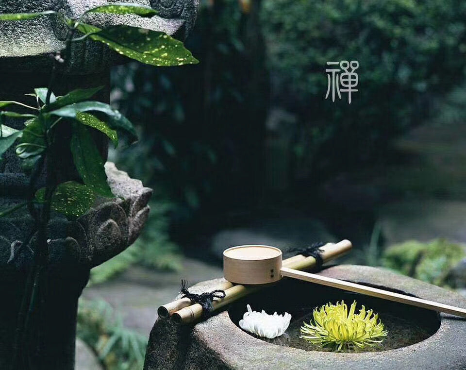

Cliff Tea200°F
Golden Resurrection
Wuyi Mountains, Fujian
The perfect entry cliff tea — floral, buttery, mellow.
FloralButterCaramel
Great First Cliff Tea
Watch →

400+ single-source Chinese teas. Every one sourced directly from the farmer who made it. No brokers. No blending. Thirty years of trust.
Every tea we sell comes from one specific farmer — someone Sophie has visited, worked with, and trusted for years.
This isn't how most tea companies work. Most source through brokers or buy at auction. We go to the gardens ourselves. When you drink our tea, you know who made it.
Our story →
Every tea comes from Camellia sinensis. Processing makes them different.
Unoxidized, pan-fired. Bright, vegetal, alive.
Fully oxidized. Cherry, chocolate, warming depth.
Sun-dried, minimal. Quiet, luminous, layered.
Rare yellowing step. Cocoa butter, cream, malt.
25+ steps. Mineral, caramel, endlessly evolving.
Microbially transformed. Earth, depth, decades.
The Hero 12 — twelve teas that represent everything we do.
Wuyi Mountains, Fujian
The perfect entry cliff tea — floral, buttery, mellow.

Central Fujian · 4,500 ft
Grassy, juicy, gently toasted. USDA organic.

Fuding, Fujian · Aged 7+ years
Chocolate, cider, deeply comforting. Treasure status.
Every Saturday, Sophie guides a live virtual tasting — one tea, explored in depth. The single best way to build the habit of tea as ritual.
Join a TastingTasting notes, new arrivals, invitations to go deeper. One email per week.